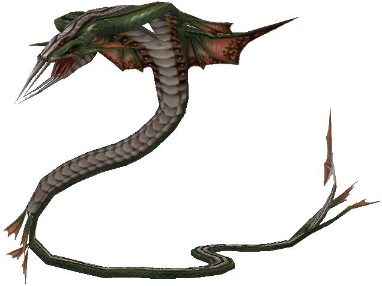
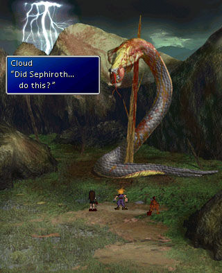

Home-Monstruos-SerpienteKalm
Serpiente de Kalm

La serpiente es un monstruo sin debilidades. Suelen aparecer en Midgar, antes de entrar en la cueva de Midgar.
Su nivel es tan alto que el jugador debe esquivarla con un chocobo para poder avanzar en la historia.
Hasta un NPC del rancho chocobo, Chocobo Bill advierte al jugador de su fuerza:
It's a serpent-like creature over 30 feet tall!! It picks up on footsteps that enter the marshes... And then, BAM!! It attacks!!!
| Nivel | 30 | |
|---|---|---|
| Experiencia | 700 | |
| Vida | 12000 | |
| Magia | 700 | |
| Movimientos | Coletazo Colmillo venenoso Tornado Explosión |
|
| Objetos | Nada |
Si el jugador llega a esquivar a la Serpiente se encontrará con un escena en la que Cloud y sus compañeros se encuentran con una serpiente muerta y clavada en un arból. La hazaña es tan irrealista que piensan que fue Sefirot el responsable:
